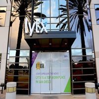

About Me

Annie S. Park
Hello, I’m a full time student studying Cognitive Science Human Computer Interaction at UC San Diego. I find the field of UX very fascinating. As I am getting more involved in UX and as a user myself, I see it as another way to help improve people's daily lives by creating experiences that are pleasant and efficient. Also, I believe creating a great user experience leads to less wasted time and energy that can be used for the more important aspects for our lives. My own experiences with frustratingly inefficient websites and the very good websites that seemed to "know" me have enticed me to become a part of improving user experience.
Skills
My experiences are mainly in UX Design, and I'm growing in my interest in UI Development.
Wireframing & Prototyping
I've built wireframes & prototypes from low fidelity to high fidelity for both mobile devices and desktops. The tools I'm experienced with include Sketch, Axure, Invision, Marvel, Adobe Photoshop, and Adobe XD.
UX/UI Design
I've carried out mutliple projects from the start to end, coming from a user-driven design. Discovering the problem, seeing the need, narrowing the target user, and addressing that need. User Research, Usability Testing, Information Architecture, Wireframing, and Prototyping are some processes dones in order to meet the need.
Front End Development
I have experience coding in html, css, jquery, and javascript and developing with CMS (cascade server & wordpress). I am able to communicate on a more technical level with developers.
Visual Design
I have experience using Photoshop and Sketch to build print designs and pixel-perfect mock-ups. I've created logos, flyers, and frames.
Education in Cognitive Science Human Computer Interaction
My knowledge of UX is not merely skin deep, but rather I understand the mental processes that go on in every user and therefore can better understand how user's perceive an experience and interface.
Communication & Management
My experiences with jobs in other areas and working in teams in projects has developed my skills in communication and management.
Portfolio

SIO Sugihara Lab Website
Web Design & Development

GIST Mobile Website
Mobile Web Design

Phetch iOs App
Interactive Prototype
UCSD AI Website
Web Design & Development
Experiences
My journey started at UCSD and continues.
-

2013-2014
Discovering My Interests
I started out as a Pharmacological Chemistry Major at UCSD, working part-time as a conversation leader and administrative assistance. With my studies and job experiences, I increasingly became interested in studying an area in which I can directly improve people's lives and decided to leave the area of chemistry.
-

2015
My First Steps as a UX/UI Designer
UX became a specific field I was interested in, and I became especially interested in working with interfaces. So though I started at the AI Office as an Administrative Assistant, I was converted to a webmaster to redesign the AI website from scratch.
-
2015-2016
Full Equipment to Go into the Field of UX/UI
During my third year of school, I ramped up in the area of UX/UI as I took on different class projects (Afterschool, GIST & Phetch), redesigned the AI Website, and worked part-time as a web designer.
-

Summer 2016
Internship at Lytx, Inc.
Though I built up my experience with projects and part-time jobs, this was my frist step into working for a company as a UX/UI Designer at Lytx, Inc. Here I was able to gain valuable skills and experiences under the mentorship of a UX Designer.
-
& there
is more
to come!